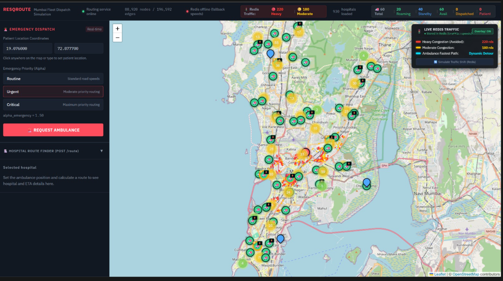

01 / 02
01
Flutter · Python · Flask · SUMO
ResQ
Smarter routes. When every second counts.
A real-time emergency mobility platform combining normal navigation, safer travel, ambulance routing and an operations dashboard. ResQ is designed around the moments where route quality, response time and situational awareness matter most.
FlutterPython / FlaskSUMODijkstra / A*YOLOv8Traffic Management